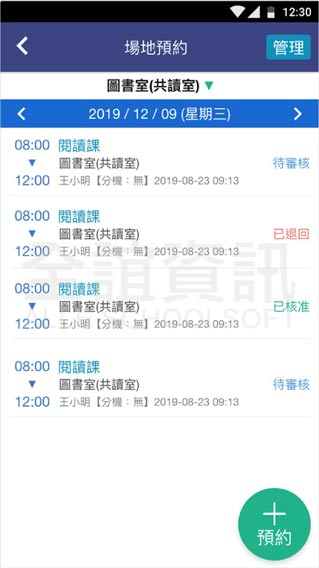
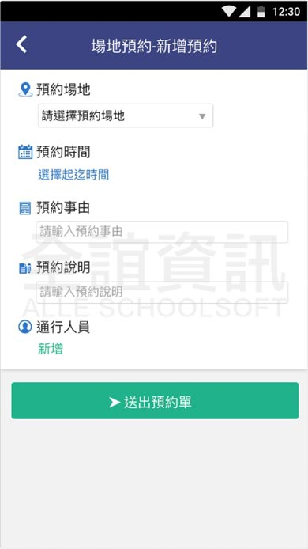

<div class="APP_application_list_class">
  <div class="APP_application_list_title">
    <span class="APP_application_list_title_left">
      <h4>場地預約</h4>  
    </span>
    <span class="APP_application_list_title_right">
      <span class="APP_list_user APP_user_orange">
        學生
      </span>
      <span class="APP_list_user APP_user_green">
        老師
      </span>
    </span>
    <div class="clear"></div>
  </div>

  <div class="APP_application_list_words">
    系統透過課表預約場地，使用學生/職員證即可開門，臨時需借教室也可透過場地預約送出申請，申請時會自動檢查申請時間是否衝突。場地管理人能透過APP輕鬆管理場地、審核申請單、遠端開門，是學校管理場地的好幫手。
  </div>

  <div class="APP_application_list_pic">
    <span class="APP_list_pic_margin">
      
    </span>
    <span class="APP_list_pic_margin">
      
    </span>
  </div>
</div>
